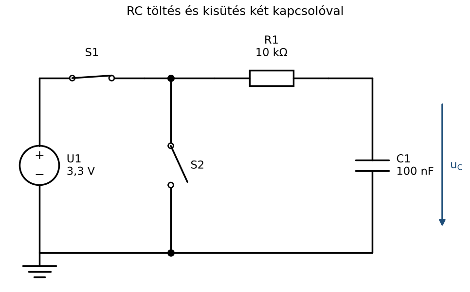
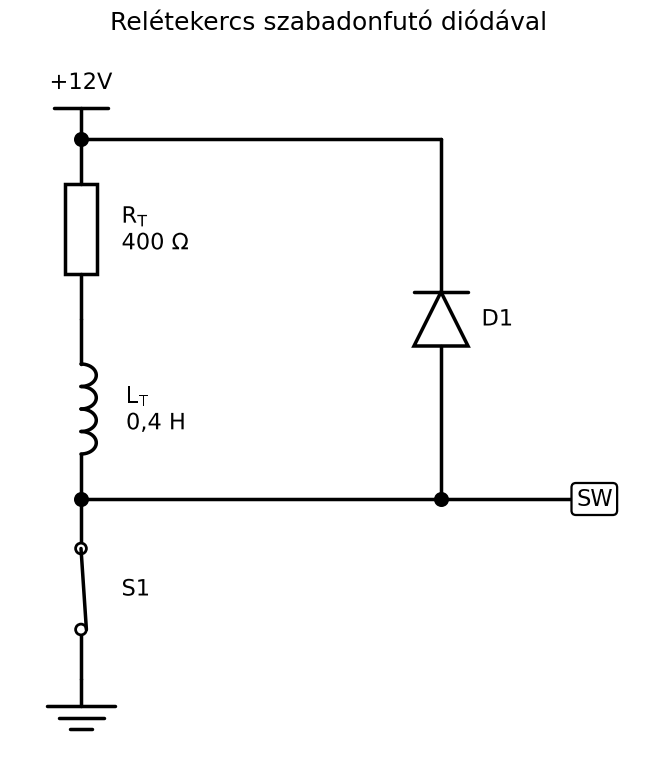
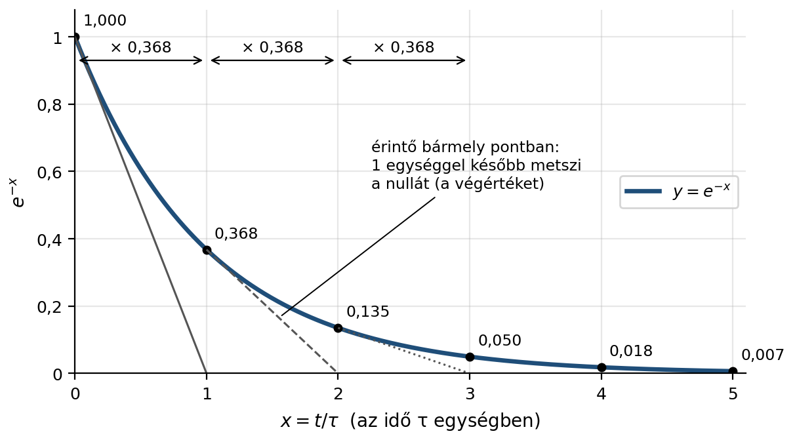
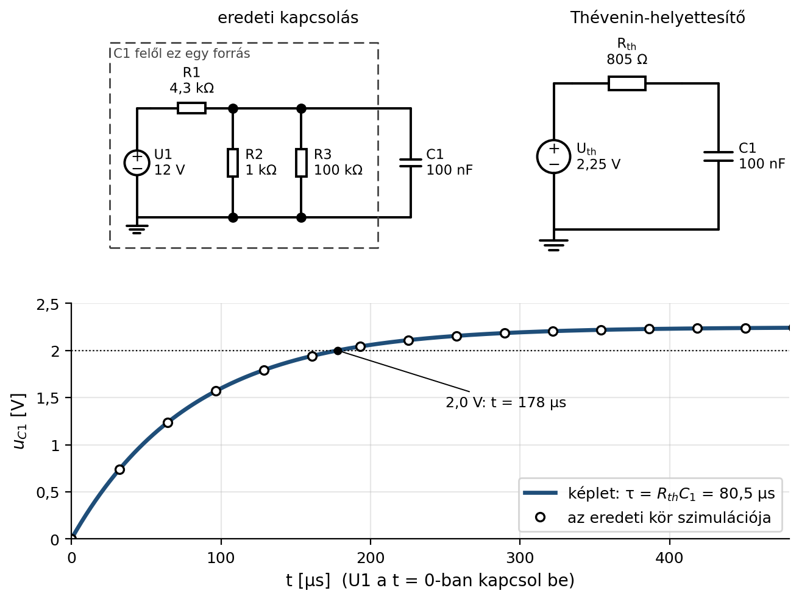
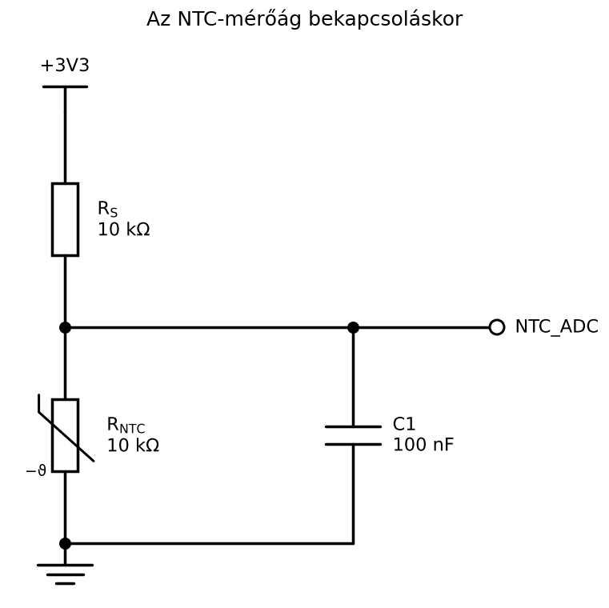

Eddig a kapcsolásaink „azonnal” álltak be: bekapcsoltuk a forrást, és
az ellenállásokon rögtön a kiszámolt feszültség jelent meg. A
kondenzátor és a tekercs viszont energiát tárol, és ezt az energiát nem
lehet nulla idő alatt megváltoztatni. Az átmenet neve
tranziens (transient): az a rövid szakasz, amíg a kör
az egyik állandósult állapotból a másikba jut. Ennek az alfejezetnek a
végén tudsz majd:
felírni egy RC vagy RL kör válaszát három adatból: kezdeti érték,
végérték, időállandó;
kiszámolni, mennyi idő alatt ér el a feszültség egy adott szintet,
és fejből használni az „1τ ≈ 63%, 5τ ≈ 99%” szabályt;
megmagyarázni a görbe alakját abból, hogy a kondenzátor feszültsége
és a tekercs árama nem ugorhat.
10.1.1 Motiváció: mennyit várjon a
program?
A szenzormodulon a hőmérsékletet egy NTC termisztor (hőmérsékletfüggő
ellenállás) méri: a 3,3 V-os sínről egy 10 kΩ-os soros ellenálláson át
táplált osztó középpontját olvassa az analóg–digitális átalakító (ADC),
és erre a csomópontra egy 100 nF-os szűrőkondenzátor csatlakozik.
Bekapcsoláskor a mikrovezérlő programja néhány mikroszekundum alatt
elindul. Ha azonnal olvas, a kondenzátor még majdnem üres, és a program
nagyon alacsony feszültséget lát – ebből hamis, rendkívül magas
hőmérsékletet számol. Mennyit kell várni? Egy tippelt „100 ms biztos
elég” működik, de nem tudás: ha holnap valaki 10 µF-ot ültet a helyére,
ugyanaz a program hibásan fog mérni.
A modul reléje ugyanezt a kérdést veti fel másik oldalról: a relé
tekercsén az áram nem ugrik fel azonnal, tehát a relé késve húz be, és
kikapcsoláskor az áramnak is „le kell futnia” valahol.
10.1.2 Szemlélet: miért nem
azonnali a töltés?
Vegyünk egy forrást, egy ellenállást és egy kondenzátort. Az S1
kapcsoló a forrásra köti a kört (töltés), az S2 pedig a forrás helyett
rövidre zárja az R1–C1 ágat (kisütés). A kettő egyszerre sosem zárt.

RC töltés és kisütés két kapcsolóval - S1
zárásakor C1 töltődik R1-en át; S1 nyitása és S2 zárása után R1-en át
kisül
A kondenzátor kezdetben üres:
.
Amikor S1 zár, a feszültség nem tud ugrani rajta (ezt a Kapacitás, töltés és energia alfejezetben láttad:
ugráshoz végtelen nagy áram kellene). Ezért az első pillanatban a teljes
3,3 V az R1 ellenállásra esik, és az áram a lehető legnagyobb:
.
Ez az áram tölti a kondenzátort: az egyik fegyverzetre pozitív töltés
érkezik, a másikról ugyanannyi elfolyik (a kondenzátor nettó töltése
végig nulla). Ahogy
nő, az ellenállásra egyre kevesebb marad
(),
ezért az áram csökken, a töltődés lassul. A végén
,
az áram nulla, a kondenzátor egyenáramon szakadásként viselkedik.
Olyan ez, mint amikor egy magasan álló, állandó szintű tartályból
vékony csövön át töltesz egy alacsonyabb edényt: a vízhozam a
szintkülönbséggel arányos, ezért az edény eleinte gyorsan, aztán egyre
lassabban telik. Az analógia korlátja: az edény megtelhet és
túlcsordulhat, a kondenzátornak viszont nincs saját „telített” szintje –
a végértéket mindig a külső kör szabja meg.
Gondolkodj előre: ha R1-et megduplázod, mi változik
– a kezdeti áram, a végfeszültség vagy a töltés ideje? Írd le a
tippedet, mielőtt továbbolvasol.
Statikus változat (mint a PDF-ben)
RC töltés: a kondenzátor és az ellenállás feszültsége,
alatta az áram útja négy időpillanatban
A felelet a gondolkodj előre kérdésre: nagyobb ellenállással a
kezdeti áram feleakkora, a végfeszültség ugyanaz (3,3 V), a folyamat
pedig pontosan kétszer olyan lassú.
A tekercs a kondenzátor „tükörképe”. A Mágneses
tér és induktivitás alfejezet szerint az árama nem ugorhat, mert a
mágneses tér energiáját nem lehet hirtelen megváltoztatni. A relé
tekercsét modellezzük egy soros
ellenállással és
induktivitással; a kapcsoló a föld felőli oldalon van (ez a low-side
kapcsolás), a D1 szabadonfutó dióda pedig a tekerccsel párhuzamos,
záróirányban.

Relétekercs szabadonfutó diódával - SW a
kapcsolócsomópont; kikapcsoláskor a tekercs árama D1-en át
körbejár
Zárt kapcsolónál az áram a +12V sínről a tekercsen és S1-en át a
földbe folyik, és fokozatosan nő a 30 mA-es végértékig. Nyitáskor az
áram nem szűnhet meg azonnal: a tekercs „tovább tolja”, és az egyetlen
szabad út a D1 – az áram a tekercs és a dióda alkotta hurokban lassan
elfogy. (Dióda nélkül a feszültség addig nőne, amíg valahol utat tör
magának: ez az Energiatárolók veszélyei:
akkumulátor, kondenzátor, induktivitás alfejezet visszarúgása.)
Statikus változat (mint a PDF-ben)
Relétekercs árama bekapcsolás és kikapcsolás
után
10.1.3 Formalizmus
10.1.3.1 Az exponenciális függvény
és a természetes logaritmus
Az ilyen „minél közelebb a célhoz, annál lassabban” folyamatokat az
exponenciális függvény írja le. Alapja az
szám; minket az
érdekel, ahol
:
0
0,693
1
2
3
4
5
1
0,5
0,368
0,135
0,050
0,018
0,0067
Két tulajdonságot jegyezz meg. Először: valahányszor
eggyel nő, az érték ugyanazzal a tényezővel,
-cal
szorzódik – a hátralévő rész mindig ugyanakkora arányban fogy.
Másodszor: a görbe meredeksége minden pontban egyenlő az ottani érték
ellentettjével. Rajzban: bárhol húzol érintőt, az pontosan egy egységgel
később metszi a vízszintes tengelyt.

Az exponenciális lecsengés és érintői
A természetes logaritmus
()
a megfordítás:
az a szám, amelyre
.
Például
,
,
,
és
.
Akkor kell, ha az időt keressük: „mikor csökken a hátralévő rész a
tizedére?” – akkor, amikor
,
vagyis
.
10.1.3.2 Az RC töltés
levezetése
Kirchhoff huroktörvénye zárt S1 mellett:
.
A kondenzátor árama a feszültsége változási sebességével arányos,
(a
a görbe pillanatnyi meredeksége, V/s-ban). Behelyettesítve:
Szavakkal: a változás sebessége arányos azzal, ami még
hiányzik a végértékhez. Pontosan ezt tudja az exponenciális
függvény. Keressük a megoldást a
alakban. Ennek a meredeksége (a fenti érintőszabály szerint,
időegységgel)
,
a hiányzó rész pedig
.
Az egyenlet tehát akkor teljesül, ha
.
Definíció. Az időállandó (time
constant) az exponenciális válasz jellemző ideje: ennyi idő alatt
csökken a végértéktől mért eltérés az
-ed
részére. RC körben
,
RL körben
.
Az érintőszabály új jelentést kap: ha a töltés a kezdeti sebességgel
folytatódna,
idő alatt érné el a végértéket. A valóságban
-ra
csak a 63,2%-nál jár.
10.1.3.3 Kisütés
S2 zárásakor a forrás kiesik,
.
Ha a kondenzátor
-ról
indul:
Az áram negatív: a töltés irányához képest visszafelé folyik, most a
kondenzátor a forrás.
10.1.3.4 RL: ugyanaz a képlet, más
szereplőkkel
A relénél zárt kapcsolóval
,
átrendezve
.
Ugyanaz a szerkezet: a változás sebessége a hiányzó résszel arányos,
tehát
Egység:
.
A relé adataival
.
Kikapcsoláskor, ideális (nulla nyitófeszültségű) diódával a forrás nincs
a hurokban, és
.
Valódi diódán
feszültség esik, ez „fékezi” az áramot: a képzeletbeli végérték
,
de az áram nullánál megáll, mert a dióda visszafelé nem vezet.
10.1.3.5 Az általános módszer:
kezdeti érték, végérték, időállandó
Definíció.Elsőrendű kör az olyan
kapcsolás, amely ellenállásokat, állandó forrásokat és egyetlen
független energiatárolót (egy kondenzátort vagy egy tekercset)
tartalmaz.
Egy elsőrendű körben a kapcsolás utáni bármelyik feszültség vagy
áram,
,
így írható:
Szavakkal: a végértéktől mért eltérés a kezdeti eltérésből indul, és
időállandóval fogy el. Három lépés:
Kezdeti érték
(közvetlenül a kapcsolás után, jele
):
a kondenzátor feszültsége és a tekercs árama annyi, amennyi a kapcsolás
előtt volt. Az
pillanatban tehát a kondenzátort helyettesítsd ekkora
feszültségforrással, a tekercset ekkora áramforrással, és számold ki a
keresett mennyiséget. Figyelem: minden más (az ellenállás feszültsége, a
kondenzátor árama) ugorhat.
Végérték
:
hosszú idő után semmi sem változik, ezért a kondenzátor szakadás
(),
a tekercs rövidzár
().
Időállandó: nézd a kört a kapcsolás utáni
állapotban, a kondenzátor vagy a tekercs kapcsai felől, és helyettesítsd
a Valós források, Thévenin és Norton
módszerével egyetlen
forrásra és
ellenállásra (a feszültségforrásokat rövidzárra, az áramforrásokat
szakadásra cserélve kapod
-t).
Ekkor
,
illetve
.
Példa: a Feszültségosztó, áramosztó és a
terhelés hatása alfejezet bemenetfigyelő osztója (R1 = 4,3 kΩ, R2 =
1 kΩ) egy 100 kΩ bemeneti ellenállású követőt táplál (mintaadat), és
most egy 100 nF-os zavarszűrő kondenzátort is kap. A C1 felől nézve a
maradék egy forrás. Belső ellenállása (a 12 V-os forrást rövidzárral
helyettesítve)
,
üresjárási feszültsége
V. Tehát
,
és bekapcsoláskor
.
Az ábra körei az eredeti, háromellenállásos kapcsolás szimulációját
mutatják: pontosan a helyettesítő kör görbéjén fekszenek.

Összetett kör időállandója
Thévenin-helyettesítéssel
10.1.3.6 Küszöbidő és
ökölszabályok
Mikor ér a válasz egy
küszöbszintre? Rendezzük a képletet:
,
majd mindkét oldal logaritmusa:
Csak akkor értelmes, ha
az
és az
között van (a végértéket magát a válasz véges idő alatt sosem éri el).
Üres kondenzátor töltésénél az
arányú szinthez
.
idő
a változásból elkészült
50%
63,2%
86,5%
95,0%
98,2%
99,3%
Az „1τ ≈ 63%, 5τ ≈ 99%” szabály bármelyik irányra érvényes:
kisütéskor
után a kezdeti érték 36,8%-a marad. Hogy az
elég-e, a pontossági igény dönti el: egy 12 bites mérés (a teljes
tartomány 4096 lépése) fél lépésen belüli beállásához jóval több kell,
mint az alábbi példából látni fogod.
Bekapcsolási késleltetés (reset): egy RC tag a
mikrovezérlő reset bemenetén addig tartja alacsonyan a jelet, amíg a táp
stabilizálódik. A küszöbidőt a fenti képlet adja; az alkatrészek tűrése
(az E-sorok, tűrés és jelölések) és a küszöb
szórása miatt tartalékkal tervezz. A pontos időzítéshez valódi felügyelő
(supervisor) IC való.
Kisütő ellenállás (bleeder): a tápkondenzátorral
párhuzamos ellenállás kikapcsolás után ismert idő alatt veszélytelen
szintre viszi a feszültséget; ára az állandó veszteség.
10.1.4 Kézi számpélda: az NTC-szűrő
beállási ideje
Feladat. Bekapcsolás után mikor olvashat az ADC, ha
a mérési hiba a tranziens miatt legfeljebb fél LSB lehet? (Az LSB az ADC
legkisebb lépése:
,
a fele 0,403 mV.) Adatok: soros ellenállás 10 kΩ,
,
az NTC 25 °C-on 10 kΩ (mintaadat).

Az NTC-mérőág bekapcsoláskor - A
kondenzátor felől: Thévenin-forrás a soros ellenállás és az NTC
osztójából
Kezdeti érték: a táp a
pillanatban jelenik meg, a kondenzátor üres:
.
Végérték: az osztó üresjárási feszültsége,
.
Időállandó:
,
.
Küszöbidő: a küszöb a végértéktől 0,403 mV-ra
van:
Józanész-ellenőrzés:
ms után még 0,67%, azaz kb. 27 LSB hiányzik – az „5τ ≈ kész” szabály itt
kevés.
De az NTC ellenállása hőfokfüggő! −20 °C-on a mintaadatok szerint kb.
77,5 kΩ, így
,
ms, a végérték 2,92 V, és
ms. Melegben viszont (85 °C) kevesebb mint 1 ms is elég. A programban
tehát a leghidegebb esetre méretezett várakozás kell,
például 10 ms.
10.1.5 Kód
Az elkit.transient modul a képleteket függvényként adja:
exp_response az általános választ,
time_to_level a küszöbidőt számolja. Először az
ökölszabályok és az NTC-példa:
from math import expfrom elkit import transient as tr, budget as bg, unitsfor k inrange(1, 6):print(f"{k} tau: {100* (1- exp(-k)):5.1f} %")half_lsb =3.3/4096/2for T in (-20, 25, 85): r_ntc = bg.ntc_resistance(T) uth =3.3* r_ntc / (10e3+ r_ntc) rth =1/ (1/10e3+1/ r_ntc) tau = rth *100e-9 tk = tr.time_to_level(uth - half_lsb, 0.0, uth, tau)print(f"{T:4d} °C: R_NTC = {units.fmt(r_ntc, 'Ω'):8s} U_inf = {uth:.3f} V "f"tau = {units.fmt(tau, 's'):7s} t = {units.fmt(tk, 's')}")
1 tau: 63.2 %
2 tau: 86.5 %
3 tau: 95.0 %
4 tau: 98.2 %
5 tau: 99.3 %
-20 °C: R_NTC = 77.5 kΩ U_inf = 2.923 V tau = 886 µs t = 7.87 ms
25 °C: R_NTC = 10 kΩ U_inf = 1.650 V tau = 500 µs t = 4.16 ms
85 °C: R_NTC = 1.45 kΩ U_inf = 0.418 V tau = 127 µs t = 880 µs
Másodszor ellenőrizzük szimulációval a bemenetfigyelő osztó
Thévenin-számítását. A Circuit osztály a teljes kapcsolást
lépésről lépésre számolja (a módszerét a következő alfejezet
tanítja):
Az RC töltés–kisütés lapon (az első ábra interaktív változata)
válaszd a „töltés, majd kisütés” módot és a „τ-hoz igazítva” tengelyt,
majd változtasd R-t és C-t. Figyeld meg: a görbe alakja nem változik,
csak az időtengely számai. Ezután válaszd a „rögzített 10 ms” tengelyt:
most látszik, hogy a nagyobb
lassít. Kulcs: az alakot a
arány szabja meg.
Indítsd el a lejátszást, és figyeld a töltéspontokat meg az
oszlopokat. Melyik pillanatban a leggyorsabb az áram? Mi történik az
összeggel? Kisütéskor miért fordul meg a pontok iránya?
Állítsd a küszöböt 99%-ra, és olvasd le a küszöbidőt τ-ban.
Egyezik-e
-del?
A relés lapon (a második interaktív ábra) válts a szabadonfutó ág
feszültségei között. Mit ad cserébe a magasabb fogófeszültség, és mibe
kerül? Figyeld az
feszültséget: ezt a kapcsolónak el kell viselnie.
10.1.7 Tipikus hibák
Tünet: a számolt időállandó nem egyezik a méréssel.
Ok: csak a „fő” ellenállást vetted figyelembe, a vele
párhuzamos vagy soros többit nem. Javítás: mindig a
kondenzátor/tekercs kapcsai felől számolj
-t,
a kapcsolás utáni állapotban.
Tünet: bekapcsolás után az első ADC-mérés hibás.
Ok: a program nem vár a szűrőkondenzátor
feltöltődésére, vagy csak 25 °C-ra méretezett. Javítás:
a legrosszabb
-val
és a megkövetelt pontossággal számolt várakozás.
Tünet: a feszültség ugrik a képletben, ahol a
valóságban nem. Ok: a kondenzátor feszültségét (vagy a
tekercs áramát) a kapcsolás pillanatában megváltoztattad.
Javítás:
,
;
csak a többi mennyiség ugorhat.
Tünet: a MOSFET vagy a tranzisztor kikapcsoláskor
tönkremegy. Ok: az induktív terhelés áramának nincs
útja. Javítás: szabadonfutó dióda vagy más
fogókapcsolás – a hurkot a kapcsoló nyitott állapotára is rajzold
fel.
Tünet: ezerszeres hiba az eredményben.
Ok: kΩ·nF-ot ms-nak gondoltad.
Javítás: alapegységben számolj, vagy jegyezd meg: kΩ·nF
= µs.
10.1.8 Önellenőrzés
Miért a kapcsolás pillanatában a legnagyobb a töltőáram?
Egy RC kör
ms. Mennyi idő alatt sül ki a kezdeti feszültség 5%-ára?
Mivel helyettesíted a kondenzátort a kezdeti és a végérték
számításakor?
Hogyan változik egy RL kör időállandója, ha a soros ellenállást
növeled? Miért ellentétes ez az RC körrel?
Miért nem éri el az exponenciális válasz soha pontosan a végértéket,
és miért nem baj ez a gyakorlatban?
10.1.9 Feladatok
(A)
,
.
Mennyi
,
és mikor éri el az üres kondenzátor a forrásfeszültség 63,2%-át, illetve
99%-át?
(A) Egy 470 µF-os kondenzátor 12 V-ra van töltve,
vele párhuzamos 1 kΩ-os kisütő ellenállással. Mikor csökken a feszültség
1 V alá? Mekkora a kezdeti teljesítmény az ellenálláson, és mennyi
energiát alakít hővé összesen?
(B) Reset-késleltetés: a bemenet 3,3 V-ról töltődik
100 kΩ-on át, a küszöb a táp 70%-a (feltételezett érték). Legalább 50 ms
késleltetés kell. Válassz E6-os kondenzátort, és ellenőrizd a
legrosszabb esetet −10% kapacitás- és −1% ellenállástűréssel.
(B) A relé a 30 mA-es árammal 21 mA-nél húz be, 9
mA-nél enged el (mintaadat, csak az elektromos késést nézzük). Számold
ki az elengedés idejét ideális diódával, 0,45 V-os Schottky-diódával,
illetve 24 V-os fogófeszültséggel a szabadonfutó ágban.
(B) A bemenetfigyelőn a 12 V-os tápra egy 1 ms
hosszú, 30 V csúcsú impulzus érkezik (a modul tesztimpulzusa). Mekkora
E6-os kondenzátor tartja a csomópontot 3,3 V alatt az impulzus végéig?
Mi lesz az ára?
(C, programozás) Írj függvényt, amely a −20…85 °C
tartományban 1 °C-onként kiszámolja az NTC-ág fél LSB-s beállási idejét
100 nF-dal, és kiírja a legrosszabb hőmérsékletet. Mi történik, ha a
kondenzátort 1 µF-ra növelik?
(C) A 3,3 V-os forrásról egy S1 kapcsolón és 10
kΩ-on át táplált csomópontra 1 µF és egy 10 kΩ-os, földre menő
ellenállás csatlakozik. Add meg az időállandót és a végértéket S1
zárásakor és nyitásakor. Miért nem egyforma a fel- és a lefutás?
10.1.10 Rövid összefoglaló
A kondenzátor feszültsége és a tekercs árama nem ugorhat, ezért az
energiatárolós körök exponenciálisan jutnak az új állapotba. Egy
elsőrendű körben bármely mennyiség
alakú: a kezdeti érték a megmaradó
-ből
vagy
-ből,
a végérték a kondenzátor szakadásával, a tekercs rövidzárjával, az
időállandó
vagy
a tároló felől nézett Thévenin-ellenállással számolható.
alatt a változás 63,2%-a,
alatt 99,3%-a megy végbe; küszöbszintre
.
A várakozási időt a legrosszabb
-ra
és a kért pontosságra méretezd.
10.1.11 Megoldások
10.1.11.1 Válaszok az önellenőrző
kérdésekre
Az első pillanatban a kondenzátor feszültsége még nulla, a teljes
forrásfeszültség az ellenállásra esik, ezért
;
később
csökken.
,
ms.
Kezdeti értéknél a kapcsolás előtti feszültségét adó
feszültségforrással, végértéknél szakadással. (Tekercsnél: áramforrás,
illetve rövidzár.)
csökken: a nagyobb ellenállás gyorsabban veszi el a tekercs energiáját.
RC-ben a nagyobb ellenállás kisebb töltőáramot enged, ezért lassít.
A hátralévő eltérés mindig ugyanakkora arányban fogy, nullát véges
idő alatt nem ér el; a gyakorlatban elég, ha a mérés vagy a logika
felbontásán belül van.
10.1.11.2 A feladatok
megoldásai
1.
s. A 63,2% ideje
ms. A 99%-é
ms.
2.
s.
s. Kezdeti teljesítmény
mW (egy 0603-as ellenállásnak már sok lehet). Az összes energia a
kondenzátor tárolt energiája:
mJ.
3.
,
tehát
ms,
nF. E6-ból 470 nF:
ms,
ms. Legrosszabb eset:
ms – éppen elég. Ha a küszöb is szórhat lefelé, a következő érték (680
nF) a biztonságos.
4. Kikapcsoláskor
mA,
mA,
ms. Ideális diódával
:
ms. Schottkyval
mA:
ms. 24 V-os fogásnál
mA:
ms. A magasabb fogófeszültség gyorsít, de a kapcsolón nagyobb feszültség
jelenik meg (itt kb. 12 + 24 = 36 V). (Szilíciumdiódás, 0,7 V-os
fogással a teljes lecsengés a nulláig kb. 2,9 ms, ezt az értéket látod
majd A BJT mint kapcsoló alfejezetben is.)
5. Az impulzus előtt a csomópont
V-on áll, a 30 V-os impulzus alatt a végérték
V lenne. Az impulzus végén
(
ms) legfeljebb 3,3 V lehet:
Ebből
,
ms,
;
E6-ból 4,7 µF (ekkor a csúcs kb. 3,03 V). Ára:
ms, a figyelő ennyivel később veszi észre a táp változását. Hosszabb
impulzus ellen a szűrő nem véd, oda feszültséghatároló kell (Szintillesztés, bemenetvédelem és
pergésmentesítés).
6.
def settle(T, C): r = bg.ntc_resistance(T) uth =3.3* r / (10e3+ r) tau = C / (1/10e3+1/ r)return tr.time_to_level(uth -3.3/8192, 0.0, uth, tau)for C in (100e-9, 1e-6): worst =max(range(-20, 86), key=lambda T: settle(T, C))print(f"C = {units.fmt(C, 'F'):6s} legrosszabb: {worst} °C, "f"t = {units.fmt(settle(worst, C), 's')}")
C = 100 nF legrosszabb: -20 °C, t = 7.87 ms
C = 1 µF legrosszabb: -20 °C, t = 78.7 ms
A leghidegebb pont a legrosszabb, mert ott a legnagyobb az NTC, így
és a végérték is. Tízszeres kapacitás tízszeres idő.
7. S1 zárásakor:
V,
,
ms. Nyitáskor a forrás leválik:
,
a kondenzátor csak a földre menő 10 kΩ-on sül ki,
ms. A két helyzetben más a kör, ezért más a Thévenin-ellenállás: a
lefutás kétszer lassabb.